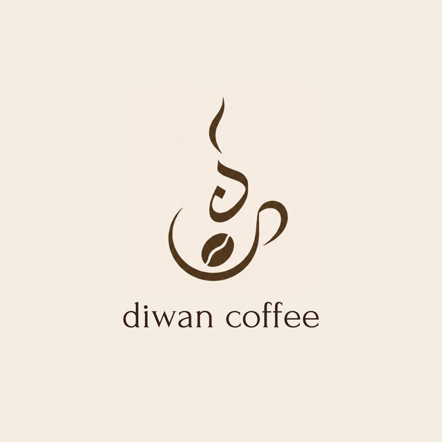
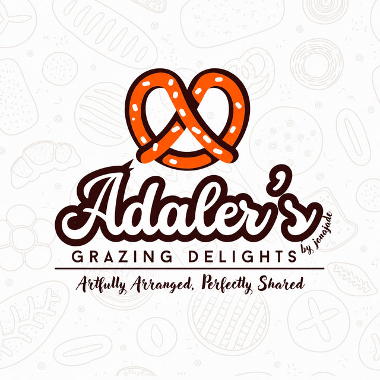
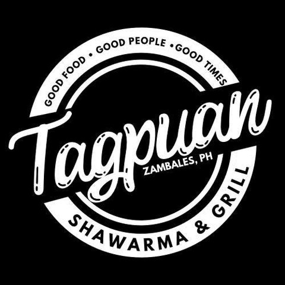
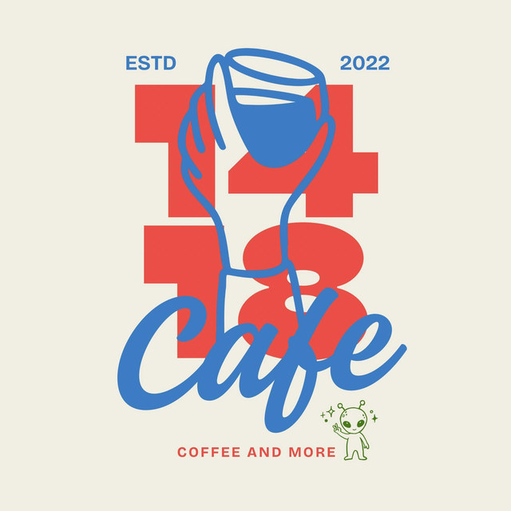

Marketplace
Local businesses. Easy to find.
Businesses, food, services and local enterprises across Masinloc — listed by the people who run them, with the details you need to get in touch.
Businesses
8 businesses


- Zamgyup 199A Korean grill restaurant in Barangay Inhobol offering Korean-style grill dining, with dine-in, takeout and reservations listed on its Facebook page.View business

- CoocaatiA Zambales coffee and donut brand with a Masinloc location on Conde Street, North Poblacion, serving coffee and donuts.View business

No businesses found. Try another name, category, or location.
Own a business in Masinloc?
Add your business to Masinloc Connect. Listings are reviewed before they appear here, and only the details you choose to publish are shown.
Submit your business